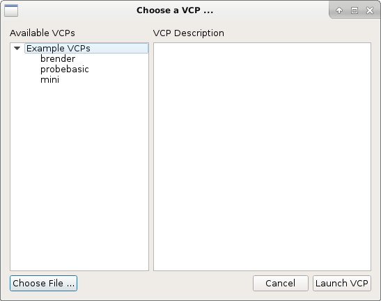

Basic Usage¶
At this point you should have the dependencies satisfied and QtPyVCP installed.
Launching a sim config¶
Several sim configurations are included with QtPyVCP, they are located
in the project's sim/ directory. These are intended to be run from a
terminal with the working directory as the project root.
Available sim configs
sim ├── tool.tbl ├── xyzb.ini ├── xyzcw.ini ├── xyz.ini ├── xyz-metric.ini └── xyzy-gantry.ini
To launch the basic XYZ machine sim run:
linuxcnc sim/xyz.ini
This should start LinuxCNC and show the VCP chooser with a list of available VCPs.

Note: If there are no VCPs listed, most likely you did not run
setup.py per the instillation instructions.
To skip the VCP chooser and launch a VCP directly you can specify the name of
the desired VCP on the command line. For example to launch the Mini VCP:
linuxcnc sim/xyz.ini mini
INI Configuration¶
QtPyVCP does not require any special INI settings. To set qtpyvcp as the GUI simply edit the INIs DISPLAY entry.
[DISPLAY] DISPLAY = qtpyvcp ...
This will show the VCP chooser every time you start LinuxCNC, but as we saw above it is possible to specify a specific VCP on the command line. We can do the same thing in the INI:
[DISPLAY] DISPLAY = qtpyvcp mini ...
But QtPyVCP supports a bunch of command line options, so this can get messy. However we can take advantage of the fact that when QtPyVCP starts up it scans the INI's [DISPLAY] section for any items that match the names of the command line options, and merges them with any options specified on the command line.
So a better INI config would look like this:
[DISPLAY] DISPLAY = qtpyvcp VCP = mini ...
In general the command line options take precedence, meaning they will override
options set in the INI. The exception to this are any flags, such as the
--fullscreen option, which if specified in the INI can not be overridden on
the command line.